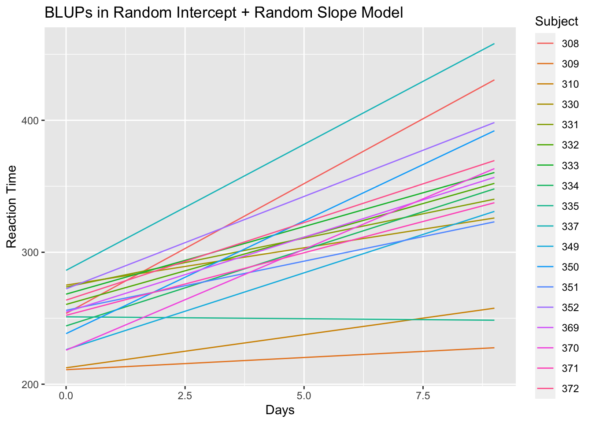

Chapter 1 Mixed Models for Longitudinal Data Analysis
1.1 Methods for Analyzing Longitudinal Data
- Longitudinal data refers to data that:
Has multiple individuals/subjects.
Each individual has multiple observations that were taken across time.
- We will denote the outcomes of interest with \(Y_{ij}\).
\(Y_{ij}\) - outcome for individual \(i\) at time \(t_{ij}\).
The \(i^{th}\) individual has \(n_{i}\) observations: \(Y_{i1}, \ldots, Y_{in_{i}}\).
There will be \(m\) individuals in the study (so \(1 \leq i \leq m\)).
\(\mathbf{x}_{ij} = (x_{ij1}, \ldots, x_{ijp})\) is the vector of covariates for individual \(i\) at time \(t_{ij}\).
Note: The data that you analyze for this project could be “asynchronous”, meaning that the outcomes \(Y_{ij}\) and the covariates are not exactly matched in time.
For example, on a given day, you may observe \(Y_{ij}\) at 9:00, 10:00, and 11:00, but observe the covariate of interest at 9:17, 9:53, and 11:08.
We will probably discuss some ways of processing asynchronous longitudinal data later in the class.

The above figure shows an example of outcomes from a longitudinal study (the sleepstudy data in the lme4 package).
In the sleepstudy data:
The time points of observation \(t_{ij}\) are the same for each individual \(i\). So, we can say \(t_{ij} = t_{j}\) for all \(i\).
The outcome \(Y_{ij}\) is the reaction time for the \(i^{th}\) individual at time point \(t_{j}\).
The 10 time points are \((t_{1}, \ldots, t_{10}) = (0, 1, \ldots, 9)\).
- Most of the well-known regression-based methods for analyzing longitudinal
data can be classified (see Diggle et al. (2013)) into one of the three following
categories:
- Random effects/mixed models,
- Marginal models,
- Transition models
- Random effects/Mixed Models
“Random effects” are added to the regression model describing the outcomes for each individual.
These “random regression coefficients” are viewed as a sample from some distribution.
- Marginal models
Regression coefficients have a “population average” interpretation.
Only mean of \(Y_{ij}\) and correlation structure of \((Y_{i1}, \ldots, Y_{in_{i}})\) are modeled.
Generalized estimating equations (GEEs) are often used for estimating model parameters.
- Transition models
- Uses a probability model for the distribution of \(Y_{ij}\) given the value of the outcome at the previous time point \(Y_{ij-1}\).
1.2 Mixed Models for Continuous Outcomes
If each \(Y_{ij}\) is a continuous outcome and we were to build a regression model without any random effects, we might assume something like: \[\begin{equation} Y_{ij} = \beta_{0} + \mathbf{x}_{ij}^{T}\boldsymbol{\beta} + e_{ij} \tag{1.1} \end{equation}\]
\(\mathbf{x}_{ij} = (x_{ij1}, \ldots, x_{ijp})\) is the vector of covariates for individual \(i\) at time \(t_{ij}\).
- The vector \(\mathbf{x}_{ij}\) could contain individual information such as smoking status or age.
- \(\mathbf{x}_{ij}\) could also contain some of the actual time points: \(t_{ij}, t_{ij-1}, ...\) or transformations of these time points.
The regression model (1.1) assumes the same mean function \(\beta_{0} + \mathbf{x}_{ij}^{T}\boldsymbol{\beta}\) holds for all individuals that have the same value of \(\mathbf{x}_{ij}\).
- It is often reasonable to assume that the regression coefficients vary across individuals.
- This can often better account for heterogeneity across individuals.
- The figure below shows 3 different regression lines from the sleepstudy data.
- Each regression line was estimated using only data from one individual.
Figure 1.1: Separately estimated regression lines for 3 subjects in the sleepstudy data.
Figure 1.1 suggests there is some heterogeneity in the relationship between study day and response time across individuals.
The response time of Subject 309 changes very little over time.
For Subject 308, there is a more clear positive association between response time and day of study.
- For the sleepstudy data, a linear regression for reaction time vs. study day
which assumes that
- Expected response time is a linear function of study day,
- All individuals have the same regression coefficients,
would have the form: \[\begin{equation} Y_{ij} = \beta_{0} + \beta_{1} t_{j} + e_{ij} \end{equation}\]
If we allowed each individual to have his/her own intercept and slope, we could instead consider the following model \[\begin{equation} Y_{ij} = \beta_{0} + \beta_{1} t_{j} + u_{i0} + u_{i1}t_{j} + e_{ij} \tag{1.2} \end{equation}\]
- \(\beta_{0} + u_{i0}\) - intercept for individual \(i\).
\(\beta_{1} + u_{i1}\) - slope for individual \(i\).
If we assume \((u_{i0}, u_{i1})\) are sampled from some distribution, \(u_{i0}\) and \(u_{i1}\) are referred to as random effects.
Typically, it is assumed that \((u_{i0}, u_{i1})\) are sampled from a multivariate normal distribution with mean zero: \[\begin{equation} (u_{i0}, u_{i1}) \sim \textrm{Normal}( \mathbf{0}, \boldsymbol{\Sigma}_{\tau} ) \end{equation}\]
Model (1.2) is called a mixed model because it contains both fixed effects \((\beta_{0}, \beta_{1})\) and random effects \((u_{i0}, u_{i1})\).
- More generally, a linear mixed model (LMM) for longitudinal data will have the form:
\[\begin{equation}
Y_{ij} = \beta_{0} + \mathbf{x}_{ij}^{T}\boldsymbol{\beta} + \mathbf{z}_{ij}^{T}\mathbf{u}_{i} + e_{ij}
\tag{1.3}
\end{equation}\]
- \(\boldsymbol{\beta}\) - vector of fixed effects
- \(\mathbf{u}_{i}\) - vector of random effects
- If we stack the responses into a long vector \(\mathbf{Y}\) and random effects into a long vector \(\mathbf{u}\)
- \(\mathbf{Y} = (Y_{11}, Y_{12}, ...., Y_{mn_{m}})\) - this vector has length \(\sum_{k=1}^{m} n_{k}\)
- \(\mathbf{u} = (u_{10}, u_{11}, ...., u_{mq})\) - this vector has length \(m \times (q + 1)\).
- Then, we can write the general form (1.3) of the LMM as
\[\begin{equation}
\mathbf{Y} = \mathbf{X}\tilde{\boldsymbol{\beta}} + \mathbf{Z}\mathbf{u} + \mathbf{e}
\end{equation}\]
- \(i^{th}\) row of \(\mathbf{X}\) is \((1, \mathbf{x}_{ij}^{T})\).
- \(i^{th}\) row of \(\mathbf{Z}\) is \(\mathbf{z}_{ij}^{T}\).
- \(\tilde{\boldsymbol{\beta}} = (1, \boldsymbol{\beta})\).
- Constructing an LMM can be thought of as choosing the desired “\(\mathbf{X}\)” and “\(\mathbf{Z}\)” matrices.
1.3 Advantages of using random effects
1.3.1 Within-subject correlation
- Using an LMM automatically accounts for the “within-subject” correlation.
- That is, the correlation between two observations from the same individual.
This correlation arises because observations on the same individual “share” common random effects.
The correlation between the \(j^{th}\) and \(k^{th}\) observation from individual \(i\) is \[\begin{equation} \textrm{Corr}(Y_{ij}, Y_{ik}) = \frac{ \mathbf{z}_{ij}^{T}\boldsymbol{\Sigma}_{\tau}\mathbf{z}_{ik} }{ \sqrt{\sigma^{2} + \mathbf{z}_{ij}^{T}\boldsymbol{\Sigma}_{\tau}\mathbf{z}_{ij}}\sqrt{\sigma^{2} + \mathbf{z}_{ik}^{T}\boldsymbol{\Sigma}_{\tau}\mathbf{z}_{ik}}} \end{equation}\]
- When using only a random intercept, the correlation between \(Y_{ij}\) and \(Y_{ik}\) is
\[\begin{equation}
\textrm{Corr}(Y_{ij}, Y_{ik}) = \frac{ \sigma_{u}^{2} }{ \sigma^{2} + \sigma_{u}^{2} }
\end{equation}\]
- In this case, \(\mathbf{z}_{ij} = 1\) and \(u_{i} \sim \textrm{Normal}(0, \sigma_{u}^{2})\)
- \(\sigma^{2}\) is the variance of the residual term \(e_{ij}\)
- For longitudinal data, one criticism of the random intercept model is that the within-subject correlation does not vary across time.
1.3.2 Inference about Heterogeneity - Variance of Random Effects
One of the goals of the data analysis may be to characterize the heterogeneity in the relationship between the outcome and some of the covariates across individuals.
Looking at the estimates of the variance of the random effects is one way of addressing this goal.
An estimate of \(\textrm{Var}( u_{ih} )\) “substantially greater than zero” is an indication that there is variability in the regression coefficient corresponding to \(u_{ih}\) across individuals.
For example, with the random intercept and slope model for the sleepstudy data \[\begin{equation} Y_{ij} = \beta_{0} + \beta_{1}t_{j} + u_{i0} + u_{i1}t_{j} + e_{ij} \end{equation}\]
- If \(\textrm{Var}( u_{i1} )\) is “large”, this implies that the response
to additional days of sleep deprivation varies considerably across individuals.
The response time of some individuals is not impacted much by additional days of little sleep.
Some individuals respond strongly to additional days of little sleep.
1.3.3 Best Linear Unbiased Prediction
You may want to estimate or “predict” the mean function/trajectory of a given individual.
This means you want to estimate/predict the following quantity: \[\begin{equation} \beta_{0} + \mathbf{x}_{ij}^{T}\boldsymbol{\beta} + \mathbf{z}_{ij}^{T}\mathbf{u}_{i} \end{equation}\]
The “Best Linear Unbiased Predictor” (BLUP) of this is \[\begin{equation} \textrm{BLUP}(\beta_{0} + \mathbf{x}_{ij}^{T}\boldsymbol{\beta} + \mathbf{z}_{ij}^{T}\mathbf{u}_{i}) = \beta_{0} + \mathbf{x}_{ij}^{T}\boldsymbol{\beta} + \mathbf{z}_{ij}^{T}E(\mathbf{u}_{i}|Y_{i1}, \ldots, Y_{in_{i}}) \end{equation}\]
I would think of the values of \(\textrm{BLUP}(\beta_{0} + \mathbf{x}_{ij}^{T}\boldsymbol{\beta} + \mathbf{z}_{ij}^{T}\mathbf{u}_{i})\) (for different values of \(j\)) as an estimate of the “true trajectory” (i.e., the true mean) of the \(i^{th}\) individual.
The observed longitudinal outcomes from individual \(i\) are a “noisy estimate” of that individual’s true trajectory.
- The BLUPs are more stable “shrinkage” estimates of the trajectory of individual \(i\).
- These are called shrinkage estimates because often shrinks the estimate that would be obtained using only data from individual \(i\) towards the “overall” estimate \(\mathbf{x}_{ij}^{T}\boldsymbol{\beta}\).
For example, if we had the intercept-only model \(Y_{ij} = \beta_{0} + u_{i} + e_{ij}\), the value of the BLUPs is \[\begin{equation} \textrm{BLUP}(\beta_{0} + u_{i}) = \frac{n_{i}\sigma_{u}^{2}}{\sigma^{2} + n_{i}\sigma_{u}^{2} }\bar{Y}_{i.} + \Big(1 - \frac{n_{i}\sigma_{u}^{2}}{\sigma^{2} + n_{i}\sigma_{u}^{2} }\Big)\bar{Y}_{..} \end{equation}\]
- \(\bar{Y}_{i.}\) is the sample mean from individual-\(i\) data
- \(\bar{Y}_{i.}\) would be the estimate of the intercept if we only looked at data from the \(i^{th}\) individual.
- \(\bar{Y}_{..}\) - overall mean
- \(\bar{Y}_{..}\) would be the estimate of the intercept if we ignored variation in intercepts across individuals.
You can also think of \(\textrm{BLUP}(\beta_{0} + \mathbf{x}_{ij}^{T}\boldsymbol{\beta} + \mathbf{z}_{ij}^{T}\mathbf{u}_{i})\) as a prediction of what the observed trajectory for individual \(i\) would be if that individual were in a future study under the same conditions.
Say \(Y_{i1}', \ldots, Y_{in_{i}}'\) are the observations for individual \(i\) in a future study.
The outcomes in the future study are determined by \[\begin{equation} Y_{ij}' = \beta_{0} + \mathbf{x}_{ij}^{T}\boldsymbol{\beta} + \mathbf{z}_{ij}^{T}\mathbf{u}_{i} + e_{ij}' \end{equation}\]
The expectation of \(Y_{ij}'\) given the observed data in our longitudinal study is \[\begin{eqnarray} E(Y_{ij}'|Y_{i1}, \ldots, Y_{in_{i}}) &=& \beta_{0} + \mathbf{x}_{ij}^{T}\boldsymbol{\beta} + \mathbf{z}_{ij}^{T}E(\mathbf{u}_{i}|Y_{i1}, \ldots, Y_{in_{i}}) \nonumber \\ &=& \textrm{BLUP}(\beta_{0} + \mathbf{x}_{ij}^{T}\boldsymbol{\beta} + \mathbf{z}_{ij}^{T}\mathbf{u}_{i}) \nonumber \end{eqnarray}\]
1.4 Generalized linear mixed models (GLMMs)
Generalized linear models (GLMs) are used to handle “non-continuous” data that can’t be reasonably modeled with a Gaussian distribution.
The most common scenarios where you would use GLMs in practice are binary, count, and multinomial outcomes.
With a generalized linear mixed model (GLMM), you assume that a GLM holds conditional on the value of the random effects.
1.4.1 GLMMs with Binary Outcomes
Under the GLM framework, the usual approach for handling binary outcomes is logistic regression.
- The assumptions underying logistic regression are:
The outcomes are independent
Each outcome follows a Bernoulli distribution.
The log-odds parameter is assumed to be a linear combination of the covariates.
- With the GLMM version of logistic regression, we will make almost the same assumptions as the regular GLM
version of logistic regression.
- The main difference is that each assumption in the GLMM will be conditional on the values of the random effects.
- To be specific, for longitudinal binary outcomes \(Y_{ij}\),
the GLMM version of logistic regression assumes the following:
Conditional on the vector of random effects \(\mathbf{u}_{i}\) \[\begin{equation} Y_{i1}, \ldots, Y_{in_{i}}|\mathbf{u}_{i} \textrm{ are independent } \end{equation}\]
Conditional on \(\mathbf{u}_{i}\), each \(Y_{ij}\) has a Bernoulli distribution \[\begin{equation} Y_{ij}|\mathbf{u}_{i} \sim \textrm{Bernoulli}\big\{ p_{ij}(\mathbf{u}_{i}) \big\} \end{equation}\] so that \(p_{ij}( \mathbf{u}_{i} ) = P(Y_{ij} = 1| \mathbf{u}_{i})\).
The “conditional” log-odds term \(\log\{ p_{ij}(\mathbf{u}_{i})/[1 - p_{ij}(\mathbf{u}_{i})] \}\) is a linear combination of the covariates and the random effects vector \(\mathbf{u}_{i}\): \[\begin{equation} \textrm{logit}\{ p_{ij}(\mathbf{u}_{i}) \} = \log\Big( \frac{ p_{ij}(\mathbf{u}_{i})}{ 1 - p_{ij}(\mathbf{u}_{i}) } \Big) = \beta_{0} + \mathbf{x}_{ij}^{T}\boldsymbol{\beta} + \mathbf{z}_{ij}^{T}\mathbf{u}_{i} \end{equation}\]
As with a linear mixed model, we assume that the random-effects vector \(\mathbf{u}_{i}\) has a multivariate normal distribution with mean zero and covariance matrix \(\boldsymbol{\Sigma}_{\tau}\) \[\begin{equation} \mathbf{u}_{i} \sim \textrm{Normal}( \mathbf{0}, \boldsymbol{\Sigma}_{\tau}) \end{equation}\]
1.4.2 GLMMs with Count Outcomes
For count outcomes, responses are typically assumed to follow a Poisson distribution and sometimes a negative binomial distribution - conditional on the values of the random effects.
For the Poisson model, we assume \(Y_{ij}|\mathbf{u}_{i} \sim \textrm{Poisson}\{ \mu_{ij}( \mathbf{u}_{i} ) \}\), \[\begin{equation} E(Y_{ij}| \mathbf{u}_{i}) = \mu_{ij}(\mathbf{u}_{i}) \qquad \textrm{Var}( Y_{ij}| \mathbf{u}_{i} ) = \mu_{ij}(\mathbf{u}_{i}) \end{equation}\]
- One common problem with the Poisson distribution is overdispersion (i.e., variance is greater than the mean).
The variance of the Poisson equals the mean.
While the marginal variance will not equal the mean in a GLMM, requiring the conditional means and variances to be equal could lead to a poor fit.
- For the negative binomial model, we assume
\(Y_{ij}|\mathbf{u}_{i} \sim \textrm{NB}\{ \mu_{ij}( \mathbf{u}_{i}) , \phi \}\), \[\begin{equation} E(Y_{ij}| \mathbf{u}_{i}) = \mu_{ij}(\mathbf{u}_{i}) \qquad \textrm{Var}( Y_{ij}| \mathbf{u}_{i} ) = \mu_{ij}(\mathbf{u}_{i}) + \phi\mu_{ij}^{2}(\mathbf{u}_{i}) \end{equation}\]- \(\phi\) is often referred to as the overdispersion parameter.
With a GLMM model for count data, it is typical to model the log of the conditional mean \(\mu_{ij}(\mathbf{u}_{i})\) with a linear regression: \[\begin{equation} \log\{ \mu_{ij}(\mathbf{u}_{i}) \} = \beta_{0} + \mathbf{x}_{ij}^{T}\boldsymbol{\beta} + \mathbf{z}_{ij}^{T}\mathbf{u}_{i} \end{equation}\]
Again, for the Poisson GLMM, the usual assumption for the random effects is that \[\begin{equation} \mathbf{u}_{i} \sim \textrm{Normal}( \mathbf{0}, \boldsymbol{\Sigma}_{\tau}) \end{equation}\]
1.5 Fitting Linear Mixed Models (LMMs) and Generalized Linear Mixed models (GLMMs) in R
- The lme4 package is probably the most general package for fitting LMMs and GLMMs.
- With Python, you can use the
mixedlmfunction from thestatmodelsmodule to fit linear mixed models.
1.5.1 Fitting LMMs with the sleepstudy data
- To start off, let’s use the sleepstudy longitudinal data in lme4 and look at the data from the first two individuals in this data.
## [1] 180 3## Reaction Days Subject
## 1 249.5600 0 308
## 2 258.7047 1 308
## 3 250.8006 2 308
## 4 321.4398 3 308
## 5 356.8519 4 308
## 6 414.6901 5 308
## 7 382.2038 6 308
## 8 290.1486 7 308
## 9 430.5853 8 308
## 10 466.3535 9 308
## 11 222.7339 0 309
## 12 205.2658 1 309
## 13 202.9778 2 309
## 14 204.7070 3 309
## 15 207.7161 4 309
## 16 215.9618 5 309
## 17 213.6303 6 309
## 18 217.7272 7 309
## 19 224.2957 8 309
## 20 237.3142 9 309- The sleepstudy data is an example of longitudinal data stored in long format
(as opposed to “wide” format).
- In long format, each row of the dataset corresponds to an observation from one individual at one time point.
- The lmer function in lme4 fits linear mixed models.
- This has many of the same features as the lm function in R.
To fit an LMM with lmer, the main thing to do is to specify the “X” part of the model (i.e., the fixed effects) and the “Z” part of the model (i.e., the random effects).
The “X” part of the model is done using the exact same “formula notation” used in the lm function.
The “Z” part of the model is done using the following type of syntax:
group_varis the “grouping variable” used for the random effects- For longitudinal data, this would be the variable which identifies each individual.
1.5.1.1 LMM with a single, random intercept for each subject
Let’s fit an LMM where there is a fixed slope for time and only a random intercept for each
Subject\[\begin{equation} Y_{ij} = \beta_{0} + \beta_{1}t_{j} + u_{i} + e_{ij} \tag{1.4} \end{equation}\]- For the “X” part of this model, we use
Reaction ~ Days.- This gives us a fixed intercept and a fixed slope for the
Daysvariable.
- This gives us a fixed intercept and a fixed slope for the
- For the “Z” part of this model, we just add
(1|Subject).- This says that there is only a random intercept within the grouping variable
Subject.
- This says that there is only a random intercept within the grouping variable
Putting these two together, we can fit the LMM (1.4) using the following code:
You can always use the
model.matrixmethod on the fittedlmerobject to check that the “X” and “Z” matrices correspond to the model you want.Let’s look at the first 5 rows of the “X” matrix from
lmm.sleep.intercept
x.mat <- model.matrix(lmm.sleep.intercept)
## This design matrix should have an intercept column
## and a column which stores the "Days" variable
x.mat[1:5,]## (Intercept) Days
## 1 1 0
## 2 1 1
## 3 1 2
## 4 1 3
## 5 1 4- Let’s look at the first 20 rows of the “Z” matrix from
lmm.intercept
## Use argument type = "random" to get random-effects design matrix
z.mat <- model.matrix(lmm.sleep.intercept, type="random")
z.mat[1:20,] # The . values in zmat correspond to zeros## 20 x 18 sparse Matrix of class "dgCMatrix"## [[ suppressing 18 column names '308', '309', '310' ... ]]##
## 1 1 . . . . . . . . . . . . . . . . .
## 2 1 . . . . . . . . . . . . . . . . .
## 3 1 . . . . . . . . . . . . . . . . .
## 4 1 . . . . . . . . . . . . . . . . .
## 5 1 . . . . . . . . . . . . . . . . .
## 6 1 . . . . . . . . . . . . . . . . .
## 7 1 . . . . . . . . . . . . . . . . .
## 8 1 . . . . . . . . . . . . . . . . .
## 9 1 . . . . . . . . . . . . . . . . .
## 10 1 . . . . . . . . . . . . . . . . .
## 11 . 1 . . . . . . . . . . . . . . . .
## 12 . 1 . . . . . . . . . . . . . . . .
## 13 . 1 . . . . . . . . . . . . . . . .
## 14 . 1 . . . . . . . . . . . . . . . .
## 15 . 1 . . . . . . . . . . . . . . . .
## 16 . 1 . . . . . . . . . . . . . . . .
## 17 . 1 . . . . . . . . . . . . . . . .
## 18 . 1 . . . . . . . . . . . . . . . .
## 19 . 1 . . . . . . . . . . . . . . . .
## 20 . 1 . . . . . . . . . . . . . . . .The
.values inz.matare just zeros.- Notice that each
Subjecthas its own “intercept” column.- This what we want - each
Subjecthas its own intercept.
- This what we want - each
- Let’s look at the estimated parameters from the LMM
with random intercepts using
summary
## Linear mixed model fit by REML ['lmerMod']
## Formula: Reaction ~ Days + (1 | Subject)
## Data: sleepstudy
##
## REML criterion at convergence: 1786.5
##
## Scaled residuals:
## Min 1Q Median 3Q Max
## -3.2257 -0.5529 0.0109 0.5188 4.2506
##
## Random effects:
## Groups Name Variance Std.Dev.
## Subject (Intercept) 1378.2 37.12
## Residual 960.5 30.99
## Number of obs: 180, groups: Subject, 18
##
## Fixed effects:
## Estimate Std. Error t value
## (Intercept) 251.4051 9.7467 25.79
## Days 10.4673 0.8042 13.02
##
## Correlation of Fixed Effects:
## (Intr)
## Days -0.371The estimated fixed-effects intercept is \(\hat{\beta}_{0} = 251.4\), and the estimated fixed-effects slope is \(\hat{\beta}_{1} = 10.5\).
- The estimated variance of the random intercept is \(\hat{\tau}^{2} = 1378.2\)
(standard deviation is \(\hat{\tau} = 37.1\)).
- i.e., it is estimated that \(u_{i} \sim \textrm{Normal}(0, 1378.2)\).
1.5.1.2 LMM with both a random intercept and slope for each subject
Now, let’s fit an LMM where there is a fixed slope for time and both a random intercept and slope for each
Subject\[\begin{equation} Y_{ij} = \beta_{0} + \beta_{1}t_{j} + u_{i0} + u_{i1}t_{j} + e_{ij} \tag{1.5} \end{equation}\]This is done with
lmerusing the following code:
- Again, let’s check the “X” and “Z” matrices from
lmm.sleep.slopeto double-check that everything makes sense
x.mat2 <- model.matrix(lmm.sleep.slope)
## This design matrix should be the same as that from lmm.sleep.intercept
x.mat2[1:5,]## (Intercept) Days
## 1 1 0
## 2 1 1
## 3 1 2
## 4 1 3
## 5 1 4- First 20 rows of the “Z” matrix from
lmm.sleep.slope:
## Use argument type = "random" to get random-effects design matrix
z.mat2 <- model.matrix(lmm.sleep.slope, type="random")
z.mat2[1:20,] # The . values in zmat2 correspond to zeros## 20 x 36 sparse Matrix of class "dgCMatrix"## [[ suppressing 36 column names '308', '308', '309' ... ]]##
## 1 1 . . . . . . . . . . . . . . . . . . . . . . . . . . . . . . . . . . .
## 2 1 1 . . . . . . . . . . . . . . . . . . . . . . . . . . . . . . . . . .
## 3 1 2 . . . . . . . . . . . . . . . . . . . . . . . . . . . . . . . . . .
## 4 1 3 . . . . . . . . . . . . . . . . . . . . . . . . . . . . . . . . . .
## 5 1 4 . . . . . . . . . . . . . . . . . . . . . . . . . . . . . . . . . .
## 6 1 5 . . . . . . . . . . . . . . . . . . . . . . . . . . . . . . . . . .
## 7 1 6 . . . . . . . . . . . . . . . . . . . . . . . . . . . . . . . . . .
## 8 1 7 . . . . . . . . . . . . . . . . . . . . . . . . . . . . . . . . . .
## 9 1 8 . . . . . . . . . . . . . . . . . . . . . . . . . . . . . . . . . .
## 10 1 9 . . . . . . . . . . . . . . . . . . . . . . . . . . . . . . . . . .
## 11 . . 1 . . . . . . . . . . . . . . . . . . . . . . . . . . . . . . . . .
## 12 . . 1 1 . . . . . . . . . . . . . . . . . . . . . . . . . . . . . . . .
## 13 . . 1 2 . . . . . . . . . . . . . . . . . . . . . . . . . . . . . . . .
## 14 . . 1 3 . . . . . . . . . . . . . . . . . . . . . . . . . . . . . . . .
## 15 . . 1 4 . . . . . . . . . . . . . . . . . . . . . . . . . . . . . . . .
## 16 . . 1 5 . . . . . . . . . . . . . . . . . . . . . . . . . . . . . . . .
## 17 . . 1 6 . . . . . . . . . . . . . . . . . . . . . . . . . . . . . . . .
## 18 . . 1 7 . . . . . . . . . . . . . . . . . . . . . . . . . . . . . . . .
## 19 . . 1 8 . . . . . . . . . . . . . . . . . . . . . . . . . . . . . . . .
## 20 . . 1 9 . . . . . . . . . . . . . . . . . . . . . . . . . . . . . . . .- Note that the two columns for each
Subjectinz.mat2are of the form \((1, t_{j})\), which is what we want.
- Let’s look at the estimated parameters from
lmm.sleep.slope
## Linear mixed model fit by REML ['lmerMod']
## Formula: Reaction ~ Days + (Days | Subject)
## Data: sleepstudy
##
## REML criterion at convergence: 1743.6
##
## Scaled residuals:
## Min 1Q Median 3Q Max
## -3.9536 -0.4634 0.0231 0.4634 5.1793
##
## Random effects:
## Groups Name Variance Std.Dev. Corr
## Subject (Intercept) 612.10 24.741
## Days 35.07 5.922 0.07
## Residual 654.94 25.592
## Number of obs: 180, groups: Subject, 18
##
## Fixed effects:
## Estimate Std. Error t value
## (Intercept) 251.405 6.825 36.838
## Days 10.467 1.546 6.771
##
## Correlation of Fixed Effects:
## (Intr)
## Days -0.138The estimated fixed-effects coefficients are \(\hat{\beta}_{0} = 251.4\), and \(\hat{\beta}_{1} = 10.5\) respectively.
- The estimated standard deviation and correlation of the random effects are
Estimated standard deviation of \(u_{i0}\) is \(24.7\).
Estimated standard deviation of \(u_{i1}\) is \(5.9\).
Estimated correlation between \(u_{i0}\) and \(u_{i1}\) is \(0.07\).
- Rather than always printing out the entire summary, you can directly extract the estimates of the fixed effects with
## Estimate Std. Error t value
## (Intercept) 251.40510 6.824597 36.838090
## Days 10.46729 1.545790 6.771481- To directly extract the estimates of the variance (or standard deviation) of the random effects, you can use:
## Groups Name Std.Dev. Corr
## Subject (Intercept) 24.7407
## Days 5.9221 0.066
## Residual 25.5918Interpreting the estimated variance of the random effects
- One way I like to think about the magnitude of the variance components is to look
at the 5th and 95th percentiles of the random effects distribution.
For example, if you only have a random intercept term, then roughly \(90\%\) of individuals will have an intercept that falls in the interval \([\hat{\beta}_{0} - 1.64\hat{\sigma}_{u0}, \hat{\beta}_{0} + 1.64\hat{\sigma}_{u0}]\).
If you have a random slope term, then roughly \(90\%\) of individuals will have an intercept that falls in the interval \([\hat{\beta}_{1} - 1.64\hat{\sigma}_{u1}, \hat{\beta}_{1} + 1.64\hat{\sigma}_{u1}]\).
- Another idea for helping to interpret the magnitude of the random effects is to plot many random trajectories
for specific choices of the covariate vector \(\mathbf{x}_{i}\) (if the \(\mathbf{x}_{i}\) vary across individuals).
- For example, in the sleepstudy data, you could plot \(\hat{\beta}_{0} + u_{i0} + \hat{\beta}_{1}t_{j} + u_{i1}t_{j}\) where the pairs \((u_{i0}, u_{i1})\) are generated from the estimated joint Normal distribution.
Sigma.hat <- VarCorr( lmm.sleep.slope )$Subject # This is the random-effects
# covariance matrix
ndraws <- 100
Sigma.hat.sqrt <- chol(Sigma.hat)
beta.hat <- coef( summary(lmm.sleep.slope) )[,1] # estimated fixed effects
print(beta.hat)## (Intercept) Days
## 251.40510 10.46729plot(sleepstudy$Days, sleepstudy$Reaction, type="n", xlab="Days", ylab="Response",
las=1, main="sleepstudy: Variation in subject-specific trajectories")
for(k in 1:ndraws) {
uvec.draw <- Sigma.hat.sqrt%*%rnorm(2) # draw random (ui0, ui1) pair
trajectory <- beta.hat[1] + uvec.draw[1] + (0:9)*(beta.hat[2] + uvec.draw[2])
lines(0:9, trajectory)
}Figure 1.2: Random trajectories for sleepstudy data using the estimated intercept and slope random-effects variances.
1.5.1.3 Extracting BLUPs in lme4
- To get the “BLUPs” the intercepts and slopes \(\textrm{BLUP}(u_{i0})\) and \(\textrm{BLUP}(u_{i1})\),
use
ranef
- To plot these, use
dotplot(you will need to load thelatticepackage first)
## $Subject- To extract the “predicted” random effects into a
DataFrameuse
## grpvar term grp condval condsd
## 1 Subject (Intercept) 308 2.258551 12.07086
## 2 Subject (Intercept) 309 -40.398738 12.07086
## 3 Subject (Intercept) 310 -38.960409 12.07086
## 4 Subject (Intercept) 330 23.690620 12.07086
## 5 Subject (Intercept) 331 22.260313 12.07086
## 6 Subject (Intercept) 332 9.039568 12.07086- This returns a data frame of the BLUPs for each random effect along with a “standard error” for each BLUP.
What we discussed earlier in Section 1.3, were the BLUPs for \(\mathbf{x}_{ij}^{T}\boldsymbol{\beta} + \mathbf{z}_{ij}\mathbf{u}_{i}\) not just the individual components of \(\mathbf{u}_{i}\).
For this random intercept and slope model, this is \(\textrm{BLUP}(\beta_{0} + \beta_{1}t_{j} + u_{i0} + u_{i1}t_{j})\)
These are obtained by using the
fittedmethod
- If we plot \(\textrm{BLUP}(\beta_{0} + \beta_{1}t_{j} + u_{i0} + u_{i1}t_{j})\) as a function of time for all individuals, it will look like the following:
library(ggplot2)
# First add the BLUPs to the sleepstudy data as a separate variable
sleepstudy$blups <- blup.full
# Now plot BLUPs vs. study data for each subject
ggplot(sleepstudy, aes(x=Days, y=blups, group=Subject)) +
geom_line(aes(color=Subject)) +
labs(title = "BLUPs in Random Intercept + Random Slope Model",
y = "Reaction Time")
1.5.2 Fitting Binary GLMMs using the Ohio data
- To use the ohio data, we will first load the geepack R package:
- This dataset has 2148 observations from 537 individuals
## resp id age smoke
## 1 0 0 -2 0
## 2 0 0 -1 0
## 3 0 0 0 0
## 4 0 0 1 0
## 5 0 1 -2 0
## 6 0 1 -1 0
## 7 0 1 0 0
## 8 0 1 1 0
## 9 0 2 -2 0
## 10 0 2 -1 0
## 11 0 2 0 0
## 12 0 2 1 0- The outcome of interest in ohio is “wheezing status”: 1 - yes, 0 - no.
- The resp variable contains wheezing status.
The id variable contains the unique identifier for each individual.
- The age in the ohio dataset is the time variable.
The age variable is recorded as: (age in years - 9).
Each individual starts the study at 7 years of age.
The smoke variable is an indicator of maternal smoking at the starting year of the study.
In lme4, fitting a GLMM with binary responses can be done with the glmer function.
The glmer function has the following syntax:
The
formulaargument uses the same syntax aslmerWhen handling binary outcomes, you need to specify the family argument as:
family = binomial.
- Just exploring this data by looking at the raw proportions, it appears that
- probability of wheezing decreases as age increases (within each level of smoking)
- maternal smoking increases the probability of wheezing at each age
library(dplyr)
prop_summary_ohio <- ohio %>%
group_by(smoke, age) %>%
summarize( prop_wheeze = mean(resp) )
prop_summary_ohio## # A tibble: 8 x 3
## # Groups: smoke [2]
## smoke age prop_wheeze
## <int> <int> <dbl>
## 1 0 -2 0.16
## 2 0 -1 0.149
## 3 0 0 0.143
## 4 0 1 0.106
## 5 1 -2 0.166
## 6 1 -1 0.209
## 7 1 0 0.187
## 8 1 1 0.139- So, we are probably going to want to include both age and smoke in our model.
1.5.2.1 A Random Intercept Model
- Let’s use a GLMM to explore the relationship between wheezing status and the:
- age of the child
- maternal smoking status
- A GLMM for wheezing status which has age and smoking status as fixed effects and random individual-specific intercepts can be expressed as
\[\begin{equation} \textrm{logit}\{ p_{ij}(u_{i}) \} = \beta_{0} + \beta_{age}\textrm{age}_{ij} + \beta_{smk}\textrm{smoke}_{i} + u_{i} \tag{1.6} \end{equation}\]
- Model (1.6) can be fit with the following code
# id is the grouping variable
ohio.intercept <- glmer(resp ~ age + smoke + (1 | id), data = ohio, family = binomial)## Estimate Std. Error z value Pr(>|z|)
## (Intercept) -3.3739539 0.27497502 -12.270038 1.311914e-34
## age -0.1767645 0.06796698 -2.600741 9.302258e-03
## smoke 0.4147806 0.28704052 1.445024 1.484510e-01## Groups Name Std.Dev.
## id (Intercept) 2.3432For a binary GLMM, the estimated standard deviation for the random intercept can be a little hard to interpret, though this value seems rather large to me.
- One way to report this is to look at the variation in \(p_{ij}(u_{i})\) for different values of age and smoking status.
- For this purpose, you could report the interval \(\textrm{expit}\big(\hat{\beta}_{0} + \hat{\beta}_{age}\times \textrm{age} + \hat{\beta}_{smk}\times \textrm{smoke} \pm 1.64\hat{\sigma}_{u0} \big)\), where \(\textrm{expit}(x) = 1/(1 + e^{-x})\)
- One way to interpret the variation visually is to randomly generate
many values of \(p_{ij}( u_{i} )\) using the estimated distribution of \(u_{i}\) to simulate the values of \(u_{i}\).
- This can help us to get a sense of how much variability there is in wheezing probability across individuals.
- To do this, I simulated values of \(p_{ij}( u_{i} )\) for each combination of age/smoking status and
plotted the results in 8 densities in 4 panels.
- It would probably be better to use some sort of bounded density estimator for these plots.
beta.hat <- coef(summary(ohio.intercept))[,1]
n <- 1000
pneg2.smoke <- plogis(rnorm(n,sd=2.34) + beta.hat[1] - 2*beta.hat[2] + beta.hat[3]) #age -2 with smoke
pneg2 <- plogis(rnorm(n, sd=2.34) + beta.hat[1] - 2*beta.hat[2]) #age -2 w/o smoke
pneg1.smoke <- plogis(rnorm(n,sd=2.34) + beta.hat[1] - 1*beta.hat[2] + beta.hat[3]) #age -1 with smoke
pneg1 <- plogis(rnorm(n, sd=2.34) + beta.hat[1] - 1*beta.hat[2]) # age -1 w/o smoke
p0.smoke <- plogis(rnorm(n, sd=2.34) + beta.hat[1] + beta.hat[3]) # age 0 with smoke
p0 <- plogis(rnorm(n, sd=2.34) + beta.hat[1]) # age 0 w/o smoke
p1.smoke <- plogis(rnorm(n,sd=2.34) + beta.hat[1] + beta.hat[2] + beta.hat[3]) # age 1 with smoke
p1 <- plogis(rnorm(n, sd=2.34) + beta.hat[1] + beta.hat[2]) # age 1 w/o smoke
par(mfrow=c(2,2), mar=c(4.1, 4.1, .5, .5))
plot(density(pneg2), lwd=2, xlab = "Probability of Wheezing at Age 7", main="", col="red")
d <- density(pneg2.smoke)
lines(d$x, d$y, lwd=2)
legend("topright", legend = c("Smoke", "No Smoke"), col=c("black", "red"), bty='n', lwd=2)
plot(density(pneg1), lwd=2, xlab = "Probability of Wheezing at Age 8", main="", col="red")
d <- density(pneg1.smoke)
lines(d$x, d$y, lwd=2)
legend("topright", legend = c("Smoke", "No Smoke"), col=c("black", "red"), bty='n', lwd=2)
plot(density(p0), lwd=2, xlab = "Probability of Wheezing at Age 9", main="", col="red")
d <- density(p0.smoke)
lines(d$x, d$y, lwd=2)
legend("topright", legend = c("Smoke", "No Smoke"), col=c("black", "red"), bty='n', lwd=2)
plot(density(p1), lwd=2, xlab = "Probability of Wheezing at Age 10", main="", col="red")
d <- density(p1.smoke)
lines(d$x, d$y, lwd=2)
legend("topright", legend = c("Smoke", "No Smoke"), col=c("black", "red"), bty='n', lwd=2)Figure 1.3: Distribution of Wheezing probability across individuals for different values of age and smoking status
References
Diggle, Peter, Patrick Heagerty, Kung-Yee Liang, and Scott Zeger. 2013. Analysis of Longitudinal Data. Vol. 25.